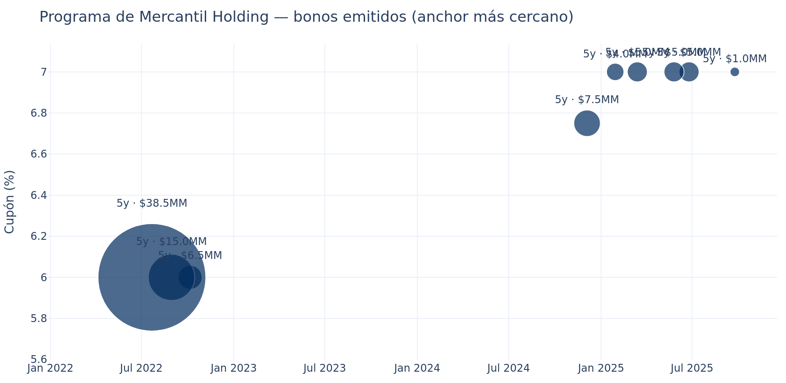
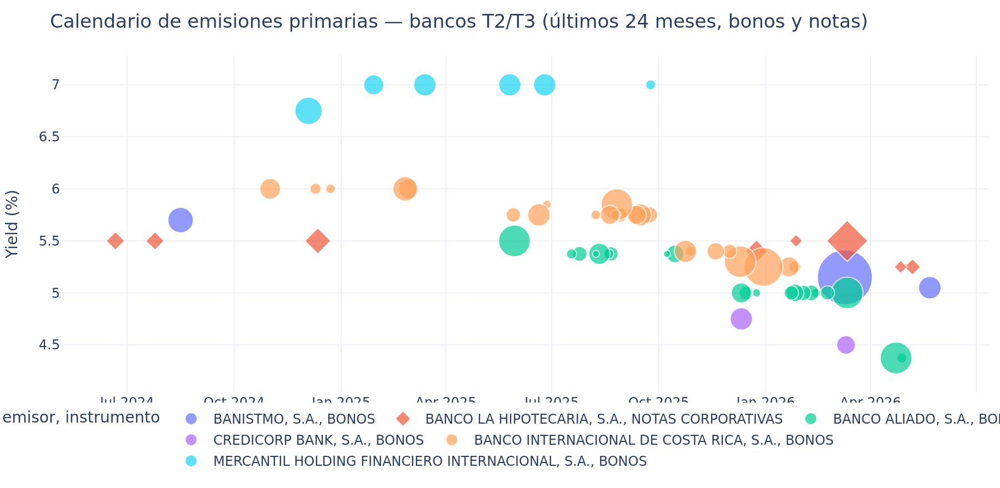
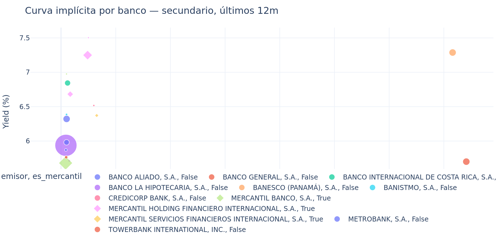
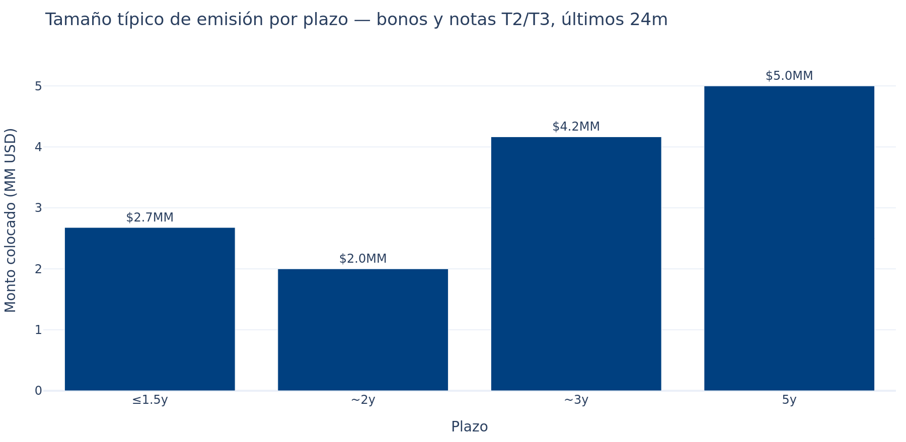
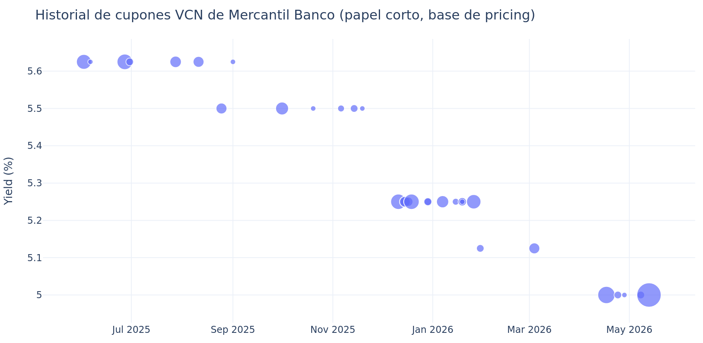

Memo de estructuración
Mercantil Banco, S.A. · emisión de bonos en mercado panameño
Generado: 2026-05-26 15:46 UTC
Informativo · No constituye recomendación de inversión ni opinión legal.
Análisis sustentado 100% en datos públicos de Latinex, SMV Panamá, U.S. Treasury y documentación
pública del emisor Banesco (Panamá), S.A. Las calificaciones de crédito son proxy curado V0 hasta
incorporar feed Bloomberg.
1. Resumen ejecutivo
6.75-7.00%
Cupón recomendado
Hallazgos clave
- Ventana de mercado: spread T2/T3 actual 203 pb (percentil 55% vs últimos 5 años). NEUTRAL (spreads cerca de la mediana histórica).
- Plazo recomendado: 5 años — es el sweet spot del mercado primario T2/T3 (n=6 emisiones peer en últimos 24m). Mercantil Holding ya tiene programa establecido a este plazo.
- Cupón recomendado 5y: rango 6.75-7.00%. Mercantil Holding emitió consistentemente a 7.00%; Mercantil Banco (subsidiaria regulada) debería salir ~25-50 bp mejor.
- Monto recomendado: arrancar con tramo inicial de $15-30 MM. Bonos de bancos T2/T3 a 5y se han colocado en rangos de $5MM (Mercantil Holding por serie) hasta $30MM (Banistmo VCN). Un programa grande puede fraccionarse en varias series.
- Estructura recomendada: BONO SENIOR BULLET, tasa fija, frecuencia trimestral. Es la estructura estándar usada por todos los peers (BICSA, Mercantil Holding, Banistmo). Subordinado AT1 perpetuo solo si el objetivo es reforzar Tier 1 capital (modelo Banesco 2022).
- Mercantil Holding como anchor: 9 emisiones a 5y con cupón 6.64% (todas 100% colocadas). Es el comparable más limpio del mismo grupo económico.
- Banesco 7% NO es comparable directo: es subordinado perpetuo AT1 (capital regulatorio), no senior bullet. Su 'senior implícito' (despejando primas) estaría en ~4.50-4.75%.
2. Ventana de mercado
El spread mediano del sector financiero tier T2/T3 (bancos medianos y grandes panameños) se encuentra
actualmente en 203 pb sobre la curva soberana Panamá. Esto corresponde
al percentil 55% de la distribución de los últimos 5 años (mediana histórica:
183 pb).
Lectura: NEUTRAL (spreads cerca de la mediana histórica).
3. Pricing por plazo — recomendación
| Plazo | Cupón peer (P25-P75) | Mercantil Banco recomendado | Monto típico (MM USD) | n peer emisiones |
|---|
| 2y |
5.29–5.60% |
5.04–5.60% |
5-15 MM |
12 |
| 3y |
5.71–5.75% |
5.46–5.75% |
10-30 MM |
8 |
| 5y |
7.00–7.00% |
6.75–7.00% |
15-50 MM |
6 |
La banda "Mercantil recomendado" parte del cupón mediano observado en bonos
y notas T2/T3 últimos 24m, descontando ~25 bp por la posición de Mercantil Banco (subsidiaria regulada) vs Mercantil Holding
y peers en el mismo escalón.
4. Mercantil Holding como anchor más cercano
La matriz Mercantil Holding Financiero Internacional tiene programa establecido de bonos a 5 años al
7.00% cupón fijo trimestral. Ha emitido 6 series en últimos 18 meses, todas con 100% de colocación.
Es el comparable más limpio porque es el mismo grupo económico.

Cada burbuja es una serie. Tamaño = monto de la serie. Todas a 5y, todas al 7.00%.
Implicación: Mercantil Banco, como subsidiaria bancaria regulada por SBP (un escalón arriba en la cadena
de subordinación vs holding), debería poder emitir ~25-50 bp mejor que Holding. Eso ubica un bono senior
bullet 5y de Mercantil Banco en 6.50-6.75%.
5. Calendario primario y peers

Emisiones primarias de bancos T2/T3 últimos 24m. Mercantil Holding consistentemente a 5y@7%; BICSA a 3y@5.30-6.00%; Banistmo y Aliado a 1y@4.4-5.4%.
6. Curva implícita en secundario

Mercantil Banco (puntos azules pequeños) solo trade en plazos cortos (VCN). Para plazos largos, anchor es Mercantil Holding y Banesco (perpetuo subordinado).
7. Banesco perpetuo — aclaración del anchor citado
La referencia "Banesco al 7% por $60MM perpetuo" corresponde a una emisión de mayo 2022 (no reciente),
estructurada como Bono Subordinado Perpetuo AT1 bajo Resolución SMV-541-21. Es capital regulatorio
Tier 1 Adicional, no un bono senior bullet.
| Variable | Banesco perpetuo | Bono senior bullet 5y (hipotético Mercantil) |
|---|
| Cupón | 7.00% fijo trimestral | ~6.50-6.75% estimado |
| Plazo | Perpetuo (call año 6 = 2028) | 5 años bullet |
| Ranking | Subordinado | Senior |
| Califica como capital | Sí — AT1 (Tier 1) | No |
| Loss-absorption | Sí (implícito en AT1) | No |
| Calificación emisor | A(pan) Fitch | Mercantil Banco: A(pan)/AA(pan) |
| Prima implícita vs senior | ~250-400 bp | — |
El cupón 7% Banesco NO es referencia directa para Mercantil Banco senior bullet. Su "senior bullet
implícito" sería ~4.50-4.75%.
8. Sizing: capacidad del mercado

Monto mediano colocado por bucket de plazo en últimos 24m, bonos y notas T2/T3.
Recomendación de sizing:
- Tramo inicial: $15-30 MM — alineado con tamaños típicos a 5y y conservador para primera salida
- Programa total: hasta $60-100 MM en serie con varias colocaciones (modelo Mercantil Holding)
- Frecuencia de re-aperturas: cada 60-90 días según ventana de mercado y absorción
9. Mercantil Banco — historial de pricing en papel corto

Cupones del programa VCN de Mercantil Banco — tendencia bajista de 5.63% (ago-25) a 5.00% (may-26).
La tendencia bajista de los cupones VCN refleja: (a) compresión general de spreads en el mercado panameño,
(b) demanda activa por papel de Mercantil Banco. Es consistente con la lectura de "ventana favorable" para
emitir paper más largo.
10. Recomendación final
Pricing target
| Variable | Recomendación | Racional |
|---|
| Instrumento | Bono Corporativo Senior | Estructura estándar T2/T3 |
| Plazo | 5 años bullet | Sweet spot del mercado; anchor Mercantil Holding |
| Cupón | 6.50–6.75% fijo trimestral | ~25 bp mejor que Holding 7%; consistente con curva implícita |
| Monto Serie A | $15–30 MM | Liquidez objetivo + colocación realista |
| Programa total | hasta $60–100 MM | En varias series; modelo Holding |
| Frecuencia cupón | Trimestral | Estándar de mercado |
| Base de día | 30/360 o ACT/360 | Más usado en Panamá |
| Estructura adicional | No callable | Callable solo si se requiere flexibilidad capital |
11. Sensibilidades y escenarios
| Escenario | Cupón target 5y | Monto objetivo | Comentario |
|---|
| Best case | 6.25% | $30-40 MM | Mercado se mantiene comprimido, demanda fuerte |
| Base case | 6.50–6.75% | $15-30 MM | Recomendación principal |
| Stress case | 7.00–7.25% | $10-15 MM | Si spreads se amplían 50 bp; reducir tamaño |
12. Próximos pasos
- Sondeo de market makers: pre-marketing con BG Valores, Prival, MMG Bank — los 3 puestos con mayor flujo en bonos T2/T3.
- Roadshow corto con AFP (Caja de Seguro Social), fondos de pensiones privados, aseguradoras — base inversora principal en Panamá.
- Calificación: contratar Equilibrium o Fitch CA para rating de la emisión (separado del rating del emisor).
- Documentación: prospecto bajo SMV, suplemento de pricing post book-building.
- Pricing day: monitorear ventana en próximas 4-8 semanas; el percentil de spreads puede moverse.
13. Metodología
El análisis combina:
- Mercado secundario: 59+ trades de bancos T2/T3 últimos 12 meses, con YTM calculado por bisección sobre flujos bullet reconstruidos.
- Mercado primario: emisiones de bonos y notas T2/T3 últimos 24 meses extraídas del universo de instrumentos vigentes Latinex.
- Benchmark: curva soberana Panamá (Tesoro local) + UST diario.
- Anchor Banesco: investigación primaria sobre IN-A 2025, EE.FF. KPMG, Resolución SMV-541-21.
Limitaciones: calificaciones son proxy V0 (a reemplazar por Bloomberg); no se dispone de book-building data
(demanda registrada); precios secundarios pueden tener ruido por operaciones pactadas.
Generado: 2026-05-26 15:46 UTC · Datos: latinexbolsa.com, supervalores.gob.pa, home.treasury.gov · No constituye recomendación de inversión.